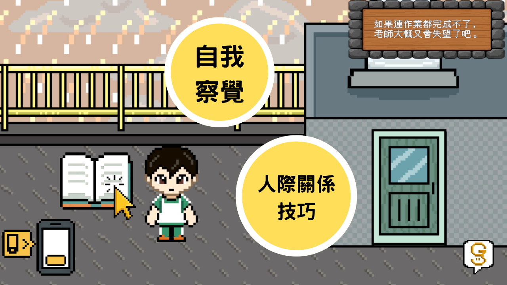
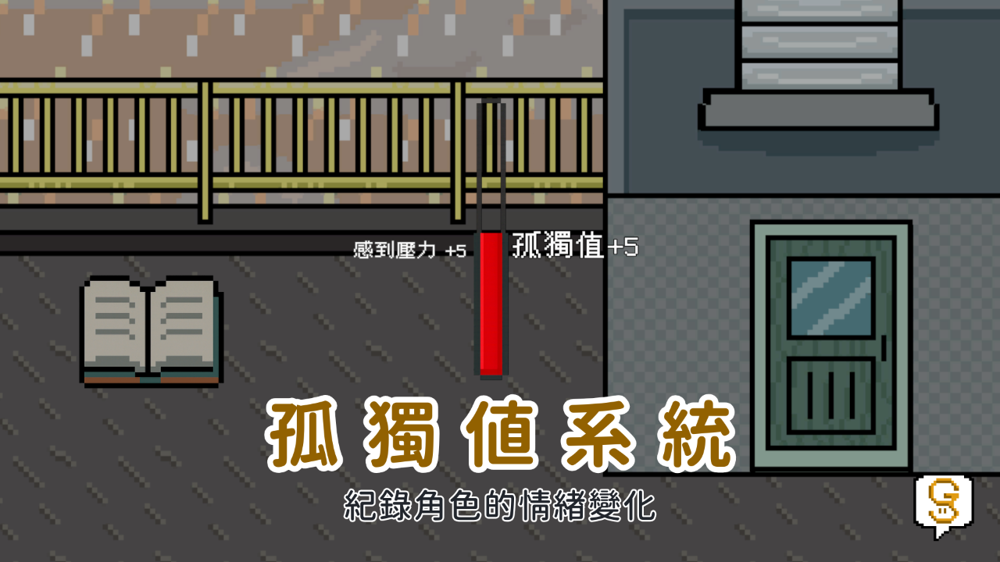
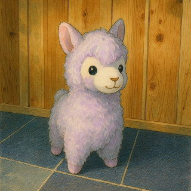
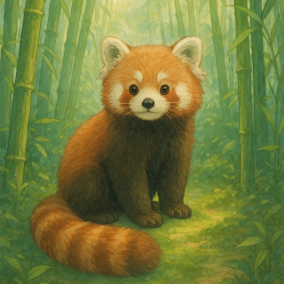
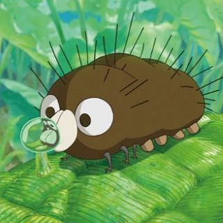

作品介紹
《孤故 Good Story》是一款專為青少年設計的敘事冒險遊戲，其核心目標是透過遊戲化學習，引導玩家認識並實踐「社會情緒學習」（SEL）的重要概念：自我察覺、人際關係技巧。玩家將扮演一名迷失於異空間的學生，意外進入一個象徵內心世界的奇幻場景。在探索過程中，在冒險過程中，玩家將遇見重要的 NPC──小雨，一位總是戴著耳機的轉學生。初次相遇時，唯有透過耐心與同理心的互動，才能逐步建立信任與連結，並在之後與小雨一同展開一連串的冒險旅程。

《孤故 Good Story》是一款專為青少年設計的敘事冒險遊戲，其核心目標是透過遊戲化學習，引導玩家認識並實踐「社會情緒學習」（SEL）的重要概念：自我察覺、人際關係技巧。玩家將扮演一名迷失於異空間的學生，意外進入一個象徵內心世界的奇幻場景。在探索過程中，在冒險過程中，玩家將遇見重要的 NPC──小雨，一位總是戴著耳機的轉學生。初次相遇時，唯有透過耐心與同理心的互動，才能逐步建立信任與連結，並在之後與小雨一同展開一連串的冒險旅程。
本作最大的亮點是將抽象的「社會情緒學習」理論，透過遊戲化的的方式具體呈現。遊戲以「孤獨」為核心，將情緒化為具象的怪物，讓學習過程更加生動有趣。遊戲特別設計「孤獨值系統」，將情緒狀態具象化呈現，讓玩家能即時看見自身選擇與互動所引發的情緒變化及其背後原因。故事採多結局發展，玩家的選擇將影響最終的結局。


遊戲設計師
負責遊戲機制設計與故事架構，專精於敘事設計與玩家體驗。

視覺設計師
負責遊戲美術設計與視覺風格，創造溫暖而富有想像力的遊戲世界。

程式開發師
負責遊戲程式開發與技術實現，確保流暢的遊戲體驗與穩定性。